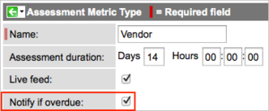

Assessment Notifications
| |
Note: This article applies to Fuji. For more current information, see Assessment Notifications at http://docs.servicenow.com
The Wiki page is no longer being updated. Please refer to http://docs.servicenow.com for the latest product documentation. |
Contents
1 Overview
In the Assessments application, you can configure ServiceNow to send email notifications to remind assessors and their managers of assessment questionnaires that must be completed. An assessment workflow triggers the notifications. Users with the required roles, as detailed in each section, can administer different aspects of the notification system.
| |
Note: Ensure that your system is configured to send and receive email notifications. |
2 Included Email Notifications
The Assessments application includes some predefined email notifications. Administrators can view and customize the provided email notifications or create new ones.
- Navigate to System Policy > Email > Notifications.
- Locate the following email notifications, all of which run on the Assessment Instance [asmt_assessment_instance] table, and edit them as needed.
- For more information about editing or creating email notifications, see Creating an Email Notification.
Email Notification Name Purpose Email Subject Email Message Notify assessment user Notifies assessors when they are assigned assessment instances. The notification includes the metric type, the due date from the Due date field on the Assessment Instance form, basic instructions, and a link to the assessment instance. Assessment notification: New assessment on <metric type name> - due by <assessment instance due date>
Example: Assessment notification: New assessment on Vendor - due by 2013-07-30You have been designated as an assessment participant on <metric type name> due to your role in the organization and subject matter knowledge. As required by management, please follow the link below and complete the assessment by <assessment instance due date>. You can save your responses until you are ready to submit them. When you are satisfied with your responses, submit the assessment. Click here to take your assessment: <Assessment instance number hyperlink>
To view your assessment queue at any time, sign in and navigate to <correct navigation path based on version>.
Remind assessment user Follow-up notification for assessors. Reminds assessors when half the assessment duration elapses for Ready to take or In progress assessment instances that are assigned to them. The assessment duration is the period that begins when the system generates an assessment instance and ends on the due date. The notification includes the metric type, the due date, basic instructions, and a link to the assessment instance. Assessment reminder: Assessment on <metric type name> - due by <assessment instance due date>
Example: Assessment reminder: Assessment on Vendor - due by 2013-07-30You have been designated as an assessment participant on <metric type name> due to your role in the organization and subject matter knowledge. As required by management, please follow the link below and complete the assessment by <assessment instance due date>. You can save your responses until you are ready to submit them. When you are satisfied with your responses, submit the assessment. Click here to take your assessment: <Assessment instance number hyperlink>
To view your assessment queue at any time, sign in and navigate to <correct navigation path based on version>.
Notify manager assessment is overdue Notifies assessors' managers when assessors do not complete their assigned assessment instances by the due date. The notification includes the assessor's name from the Assigned to field on the assessment instance, the metric type, the due date, and a link to the assessment instance. Managers must have the assessment_admin role to view the assessment instance. An assessment administrator must enable this notification separately for each metric type. For more information, see Enabling Manager Notifications.
Assessment notification: <Assigned user name>'s assessment on <metric type name> is overdue
Example: Assessment notification: Modesto Scroggie's assessment on Vendor is overdue<Assigned user name> has not completed an assessment on <metric type name> by the due date: <assessment instance due date>. You are being notified because you are specified as <assigned user name>'s manager. Please contact <assigned user name> and take appropriate action. It is important that users complete assessments, as the data is critical to our business process decisions.
Click here to view the overdue assessment: <Assessment instance number hyperlink>
2.1 Enabling Manager Notifications
Users with the assessment_admin role can enable the Notify manager assessment is overdue email notification. This notification sends emails to assessors' managers when assessors do not complete their assigned assessments on time. For more information, see the table of assessment notifications. You must enable or disable this email notification separately for each metric type.
- Navigate to Assessments > Metric Definition > Types.
- Open a metric type.
- Select the Notify if overdue check box.
-
- 
-
- To disable manager notifications, clear the check box.
-
- Save the record.
| |
Note: The assessor's user record must have a manager specified in the Manager field to use this notification. You might need to personalize the form to use this field. |
3 Assessment Notification Workflow
The system sends assessment notifications according to the Notify assessment user workflow. Users with the workflow_admin, workflow_creator, or workflow_publisher roles can view workflows.
- To open the graphical workflow editor, navigate to Workflow > Workflow Editor.
- In the activity menu, click the link to choose an existing workflow.
-
- Select Notify assessment user from the Workflow Versions list.
- The workflow appears.

{kind=link}
{kind=link}
Contents > Administer > Service Administration > Assessments
Contents > Administer > Service Administration > Notification Administration